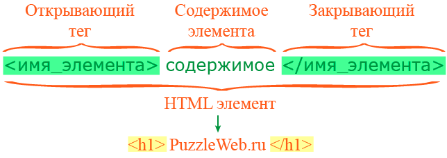
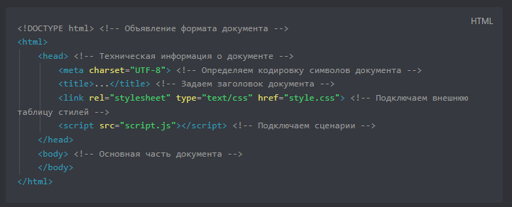

Что такое HTML
HTML (HyperText Markup Language) представляет язык разметки гипертекста, используемый
преимущественно для создания документов в сети интернет. HTML начал свой путь в начале 90-х
годов как примитивный язык для создания веб-страниц, и в настоящий момент уже трудно представить
себе интернет без HTML. Подавляющее большинство сайтов так или иначе используют HTML.
В 2014 году официально была завершена работа над новым стандартом - HTML5, который фактически
произвел революцию, привнеся в HTML много нового.
Что именно привнес HTML5?
- HTML5 определяет новый алгоритм парсинга для создания структуры DOM
- добавление новых элементов и тегов, как например, элементы video, audio и ряд других
- переопределение правил и семантики уже существовавших элементов HTML
Структура HTML-элементов

Основными частями элемента являются:
- Открывающий тег: Он состоит из названия (обозначения) элемента (в нашем случае, p),
помещённого внутри угловых скобок. Данный тег служит признаком начала элемента, с этого
момента тег начинает влиять на следующее после него содержимое.
- Закрывающий тег: выглядит как и открывающий, но содержит слеш перед названием тега. Он
служит признаком конца элемента. Пропуски закрывающих тегов — типичная ошибка новичков,
которая может приводить к неопределённым результатам — в лучшем случае всё сработает
правильно, в других страница может вовсе не прорисоваться или прорисоваться не как
ожидалось.
- Содержимое: Как видно, в нашем случае содержимым является простой текст.
- Элемент: открывающий тег + закрывающий тег + содержимое = элемент.
Атрибуты
У элементов также могут быть атрибуты, которые выглядят так:

Атрибуты содержат дополнительную информацию об элементе, которая, по вашему мнению, не должна
отображаться в содержимом элемента. В данном случае атрибут class позволяет вам дать элементу
идентификационное имя, которое в дальнейшем может быть использовано для обращения к элементу с
информацией о стиле и прочими вещами.
Атрибут должен иметь:
- Пробел между атрибутом и именем элемента (или предыдущим атрибутом, если у элемента уже есть
один или несколько атрибутов).
- Имя атрибута и следующий за ним знак равенства.
- Значение атрибута, заключённое в кавычки.
Структура документа HTML5
Каждый HTML документ, отвечающий спецификации HTML какой-либо версии, обязан начинаться со строки
декларации версии HTML, делается это с помощью объявления <!DOCTYPE>- доктайп .

Для создания документа HTML5 нам нужны в первую очередь два элемента: DOCTYPE и html. Элемент
doctype или Document Type Declaration сообщает веб-браузеру тип документа.
указывает, что данный документ является документом html и что используется
html5, а не html4 или какая-то другая версия языка разметки.
А элемент html между своим открывающим и закрывающим тегами содержит все содержимое документа.
Внутри элемента html мы можем разместить два других элемента: head и body. Элемент head содержит
метаданные веб-страницы - заголовок веб-страницы, тип кодировки и т.д., а также ссылки на
внешние ресурсы - стили, скрипты, если они использутся. Элемент body собственно определяет
содержимое html-страницы.
Элементы, находящиеся внутри элемента <html>, образуют дерево документа, так называемую
объектную модель документа, DOM (document object model). При этом элемент <html> является
корневым элементом.